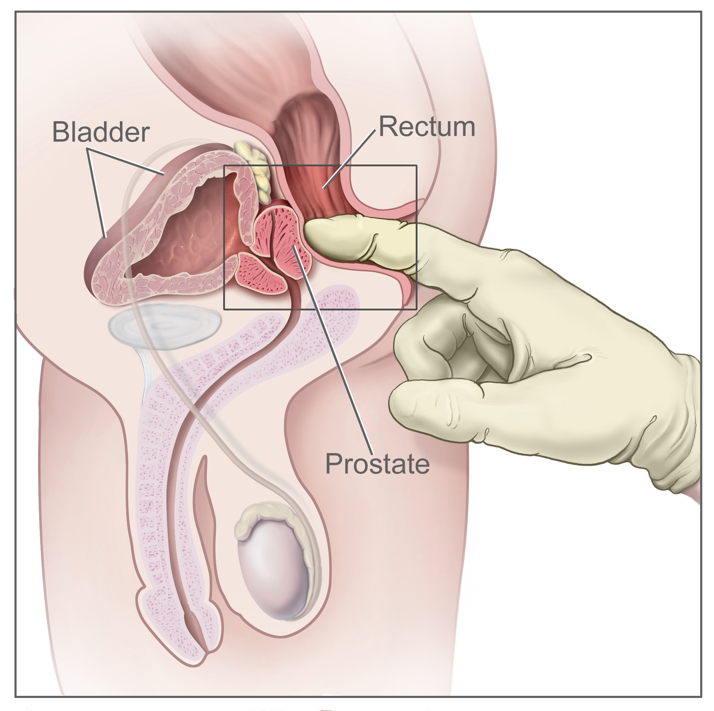

Homem, 63 anos, negro. Queixa única: está difícil urinar, jato fraco há dois anos. Não trouxe exame nenhum — nunca dosou PSA. No toque, o urologista encontra um nódulo endurecido, de superfície irregular. Ele pede PSA para a manhã seguinte e já encaminha para biópsia. A pergunta: ele acertou ao indicar a biópsia antes de saber o PSA?
O nódulo que mudou a manhã do paciente
Homem de 63 anos, negro, entra no consultório do urologista reclamando de uma coisa só: está difícil urinar. O jato saiu fraco, e isso já dura uns dois anos. Ele não traz exame nenhum — nunca dosou PSA, nunca fez ultrassom. O urologista faz o que tem que fazer em qualquer homem dessa idade com essa queixa: calça a luva e examina.
No toque retal, o dedo encontra algo que não deveria estar ali: um nódulo endurecido, de superfície irregular, na próstata. Próstata normal é lisa, elástica, simétrica. Aquilo é o oposto.
A conduta do urologista é rápida e firme. Ele pede um PSA para coletar na manhã seguinte e já encaminha o paciente para ultrassonografia transretal com biópsia. Repare na sequência: ele indicou a biópsia antes de saber o resultado do PSA.
E aqui está a pergunta que vai te perseguir até o fim: o médico acertou ao indicar biópsia antes mesmo de conhecer o PSA? Guarde essa pergunta. Ela parece pegadinha, mas tem uma resposta limpa, e ela depende de um princípio que se constrói página por página.
Por enquanto, fixe o gatilho que já justifica tudo: diante de um nódulo na próstata, a suspeita obrigatória é câncer de próstata. Não é "talvez". Não é "depende do PSA". É suspeita obrigatória, e suspeita obrigatória de câncer pede confirmação histológica.

O erro clínico clássico é "esperar o PSA pra decidir". Próstata com nódulo ao toque já tem indicação de biópsia montada — o PSA é informação adicional, não o gatilho. Quem espera, atrasa.
Nódulo prostático endurecido = biópsia, sem esperar PSA. Antes de confirmar que esse nódulo é câncer, vale entender por que o câncer de próstata é, ao mesmo tempo, o mais comum e o que menos preocupa em mortalidade.
Quiz — fixação
-
Homem de 63 anos com nódulo endurecido e irregular ao toque retal, sem PSA disponível. Conduta?
Gabarito: B. Nódulo prostático é suspeita obrigatória de câncer; a biópsia se indica pelo toque, não depende do PSA.
Por que cair na A: o erro clássico é tratar o PSA como gatilho — ele é complemento.
-
Jato urinário fraco isolado já indica biópsia prostática.
Falso. Sintoma obstrutivo isolado sugere hiperplasia benigna; o que indica biópsia aqui é o nódulo ao toque.
-
Diante de um nódulo na próstata, a suspeita obrigatória é ______.
Câncer de próstata. Nódulo endurecido e irregular grita malignidade — e malignidade pede confirmação histológica.